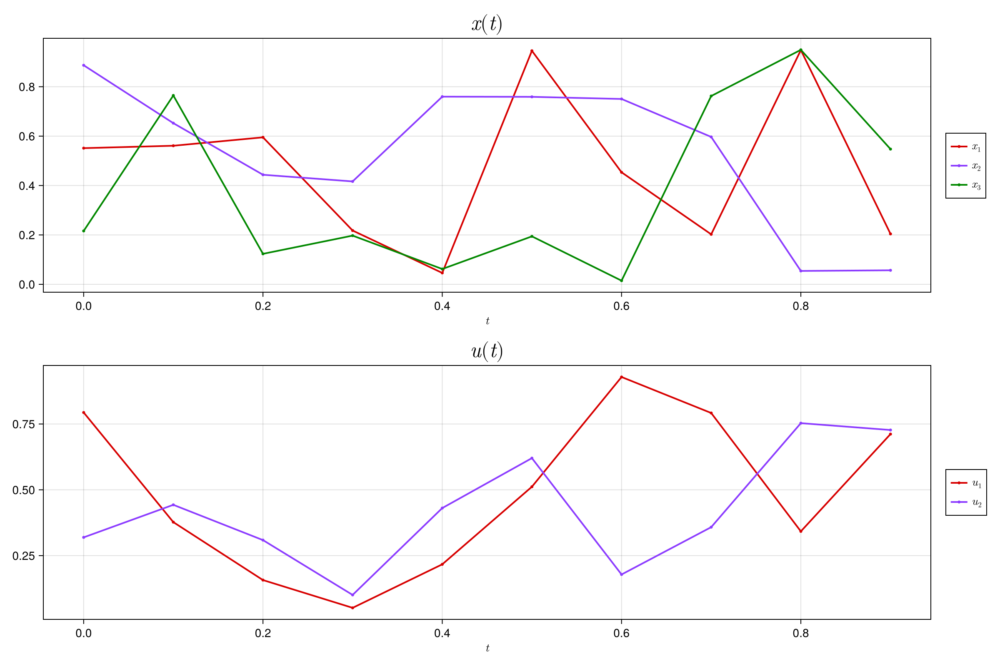

Quickstart Guide
Getting set up
To install NamedTrajectories simply enter the package manager in the Julia REPL with ] and run
pkg> add NamedTrajectoriesThen just use the package as usual with
using NamedTrajectoriesFor the following examples let's work with a simple trajectory
\[\qty{z_t = \mqty(x_t \\ u_t)}_{t=1:T}\]
where $x_t$ is the state and $u_t$ is the control at a time indexed by $t$. Together $z_t$ is referred to as a knot point and a NamedTrajectory essentially just stores a collection of knot points and makes it easy to access the state and control variables.
Creating a fixed-timestep NamedTrajectory
Here we will createa a NamedTrajectory with a fixed timestep. This is done by passing a scalar as the timestep kwarg.
# define the number of timesteps
T = 10
# define the knot point data as a NamedTuple of matrices
data = (
x = rand(3, T),
u = rand(2, T),
)
# we must specify a timestep and control variable for the trajectory
timestep = 0.1
control = :u
# we can now create a `NamedTrajectory` object
traj = NamedTrajectory(data; timestep=timestep, controls=control)
# we can return the names of the stored variables
traj.names(:x, :u)Let's plot this trajectory
plot(traj)
Creating a variable-timestep NamedTrajectory
Here we will create a NamedTrajectory with a variable timestep. This is done by passing a Symbol, corresponding to component of the data, as the timestep kwarg.
# define the number of timesteps
T = 10
# define the knot point data as a NamedTuple of matrices
data = (
x = rand(3, T),
u = rand(2, T),
Δt = rand(T),
)
# we must specify a timestep and control variable for the NamedTrajectory
timestep = :Δt
control = :u
# we can now create a `NamedTrajectory` object
traj = NamedTrajectory(data; timestep=timestep, controls=control)
# we can return the names of the stored variables
traj.names(:x, :u, :Δt)Adding more problem data
In many settings we will want to add problem data to our NamedTrajectory – e.g. bounds, initial values, final values, and goal values. This is realized by passing NamedTuples containing this data.
# define the number of timesteps
T = 10
# define the knot point data as a NamedTuple of matrices
data = (
x = rand(3, T),
u = rand(2, T),
Δt = rand(T),
)
# define initial values
initial = (
x = [1.0, 0.0, 0.0],
u = [0.0, 0.0],
)
# define final value, here just on the control
final = (
u = [0.0, 0.0],
)
# define bounds
bounds = (
x = 1.0,
u = 1.0
)
# set a goal for the state
goal = (
x = [0.0, 0.0, 1.0],
)
# we must specify a timestep and control variable for the NamedTrajectory
timestep = :Δt
control = :u
# we can now create a `NamedTrajectory` object
traj = NamedTrajectory(
data;
timestep=timestep,
controls=control,
initial=initial,
final=final,
bounds=bounds,
goal=goal
)
# we can then show the bounds
traj.goal(x = [0.0, 0.0, 1.0],)Retrieving data
There are a number of ways to access data, for example
traj.x3×10 Matrix{Float64}:
0.339772 0.458011 0.808673 0.810924 … 0.605286 0.433245 0.472111
0.475 0.176688 0.0391139 0.5282 0.499439 0.258999 0.987082
0.884408 0.392084 0.176183 0.812569 0.664802 0.294856 0.722683returns the data matrix associated with the state variable x.
traj.data6×10 reshape(view(::Vector{Float64}, :), 6, 10) with eltype Float64:
0.339772 0.458011 0.808673 0.810924 … 0.605286 0.433245 0.472111
0.475 0.176688 0.0391139 0.5282 0.499439 0.258999 0.987082
0.884408 0.392084 0.176183 0.812569 0.664802 0.294856 0.722683
0.989048 0.524702 0.0146634 0.0903063 0.697352 0.536413 0.515899
0.245487 0.198962 0.026631 0.0221841 0.499686 0.427416 0.800935
0.666301 0.588193 0.0227659 0.74916 … 0.905327 0.40828 0.872352returns the all of the data as a matrix where each column is a knot point.
traj.datavec60-element Vector{Float64}:
0.3397717188399447
0.4749996197418046
0.8844080846299748
0.9890477882571549
0.24548746414774825
0.6663011881741285
0.45801052956750843
0.17668843849673366
0.39208387030612213
0.5247017708732374
⋮
0.53641270445415
0.42741570371746584
0.40827955001498695
0.4721106341536885
0.987081777648369
0.7226826899871555
0.5158991782222441
0.8009349815381217
0.872351801302637returns the all of the data as a view of the data matrix as a vector – useful for passing data to solvers.
traj[1]KnotPoint(1, [0.3397717188399447, 0.4749996197418046, 0.8844080846299748, 0.9890477882571549, 0.24548746414774825, 0.6663011881741285], 0.6663011881741285, (x = 1:3, u = 4:5, Δt = 6:6, states = [1, 2, 3], controls = [4, 5, 6]), (:x, :u, :Δt), (:u, :Δt))returns a KnotPoint.
traj[1].x3-element Vector{Float64}:
0.3397717188399447
0.4749996197418046
0.8844080846299748returns the state at the first knot point.
get_times(traj)10-element Vector{Float64}:
0.0
0.6663011881741285
1.254493945859989
1.2772598147950323
2.0264197775237873
2.1064604595330456
2.208729562579105
3.0683799885400234
3.973706772397252
4.381986322412239returns the times of the knot points.
get_timesteps(traj)10-element Vector{Float64}:
0.6663011881741285
0.5881927576858605
0.022765868935043065
0.749159962728755
0.0800406820092584
0.10226910304605963
0.8596504259609181
0.9053267838572284
0.40827955001498695
0.872351801302637returns the timesteps of the knot points, as vector.
Retrieving metadata
We can also retrieve metadata about the trajectory, for example
traj.names(:x, :u, :Δt)returns the names of the variables stored in the trajectory.
traj.dims(x = 3, u = 2, Δt = 1, states = 3, controls = 3)returns the dimensions of the variables stored in the trajectory.
traj.T10returns the number of knot points in the trajectory.
traj.components(x = 1:3, u = 4:5, Δt = 6:6, states = [1, 2, 3], controls = [4, 5, 6])returns the components of the trajectory.
This page was generated using Literate.jl.